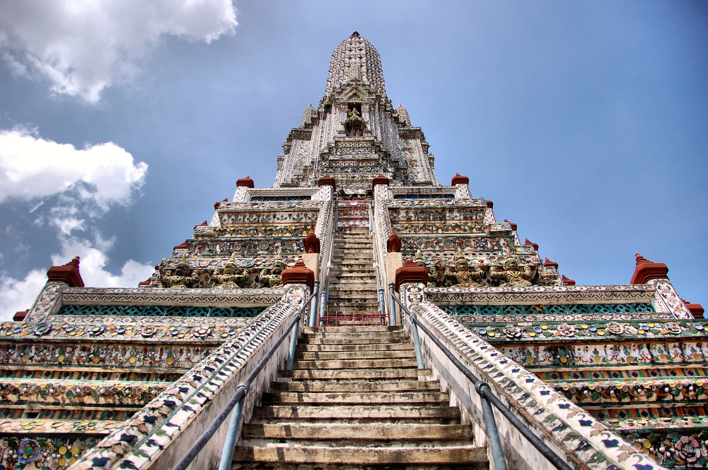
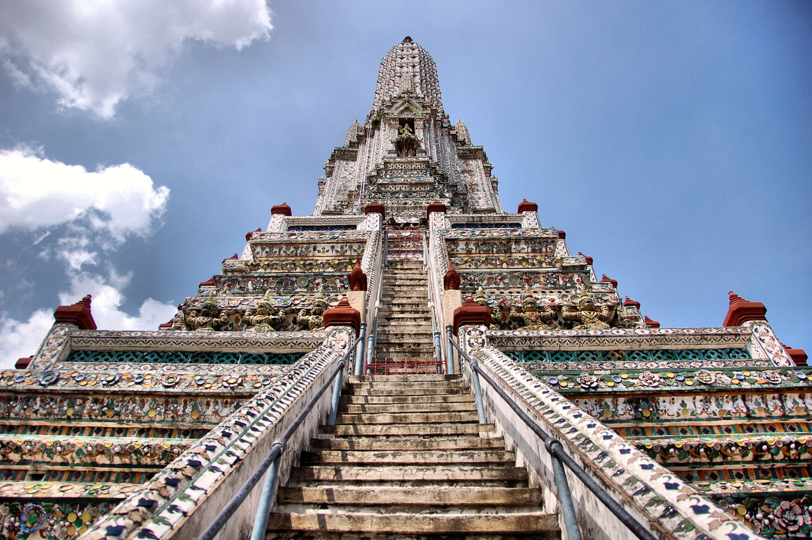

玉佛寺是泰国最神圣的寺庙，供奉着玉佛——一尊备受尊敬的佛像。整座寺庙是泰国建筑艺术的杰作，也是大皇宫建筑群的一部分。
• 开放时间：每天 8:00 AM - 3:30 PM• 距离酒店：约36.4公里 / 45分钟
黎明寺是曼谷最具标志性的寺庙之一，坐落于湄南河畔。寺庙因其华丽的建筑风格和河畔的全景视野而闻名，尤其是在日落时分。
• 开放时间：每天 8:00 AM - 5:30 PM• 距离酒店：约40.9公里 / 40分钟


 
